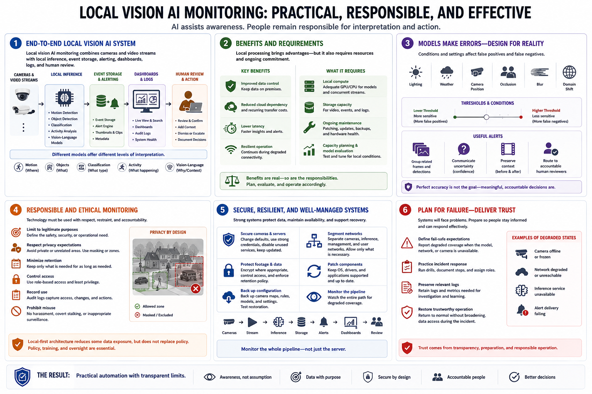

Course Summary and Key Takeaways
Connecting to LMS... Progress: in progress

Narration
Local vision AI monitoring combines cameras and video streams with local inference, event storage, alerting, dashboards, logs, and human review. Motion detection, object detection, classification, activity analysis, and vision-language models offer different levels of interpretation.
Local processing can improve data control, reduce cloud dependency and recurring transfer costs, support low-latency workflows, and continue during degraded connectivity. It also requires local compute, storage, maintenance, capacity planning, and model evaluation.
Models make errors. Lighting, weather, camera position, occlusion, blur, domain shift, and thresholds affect false positives and false negatives. Useful alerts group events, communicate uncertainty, preserve context, and route meaningful decisions to accountable human reviewers.
Responsible monitoring limits coverage to legitimate purposes, respects privacy expectations, minimizes retention, controls access, records use, and prohibits harassment or inappropriate surveillance. Local-first architecture reduces some data exposure but does not replace policy.
Strong systems secure cameras and servers, segment networks, protect footage, patch components, back up configuration, and monitor the entire pipeline for degraded coverage. The result is practical automation with transparent limits: AI assists awareness, while people remain responsible for interpretation and action.